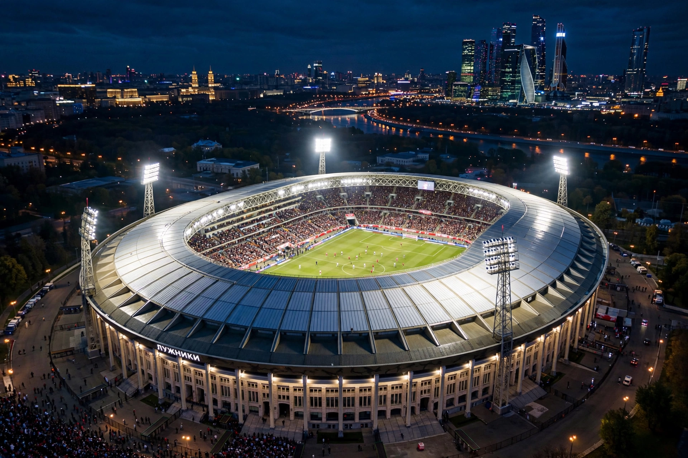

The 2018 FIFA World Cup was the 21st FIFA World Cup, held in Russia from 14 June to 15 July 2018. France won their second title, beating Croatia 4–2 in the final at Moscow's Luzhniki Stadium.

| Tournament details | |
|---|---|
| Host | Russia |
| Dates | 14 June – 15 July 2018 |
| Teams | 32 |
| Champions | France (2nd title) |
| Runners-up | Croatia |
| Matches / Goals | 64 / 169 |
| Top scorer | Harry Kane (6 goals) |
It was the first World Cup held in Eastern Europe and the first to use the video assistant referee (VAR) system. 32 teams competed in 12 venues across 11 cities. Iceland and Panama made their debuts.
France beat Argentina 4–3 in the round of 16, Uruguay in the quarter-finals, and Belgium 1–0 in the semi-final. Croatia reached their first final after extra-time wins over Denmark, Russia, and England. Belgium finished third.
Luka Modrić won the Golden Ball, Harry Kane the Golden Boot, Kylian Mbappé Best Young Player, and Thibaut Courtois the Golden Glove. See FIFA World Cup.